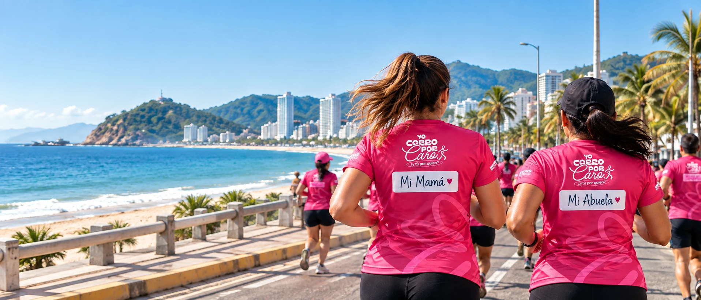
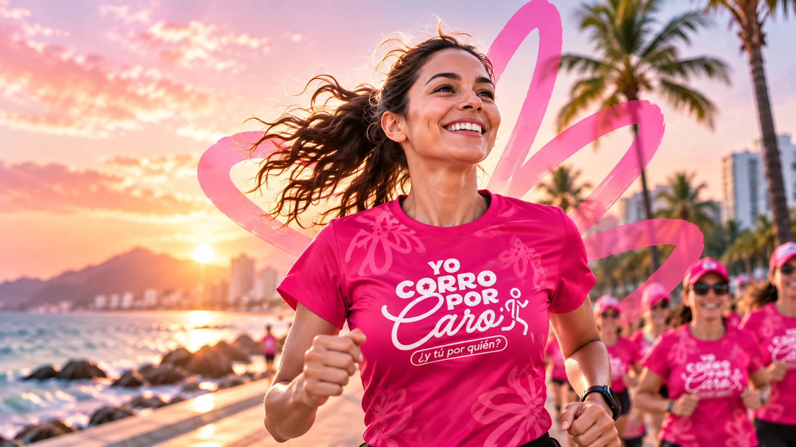
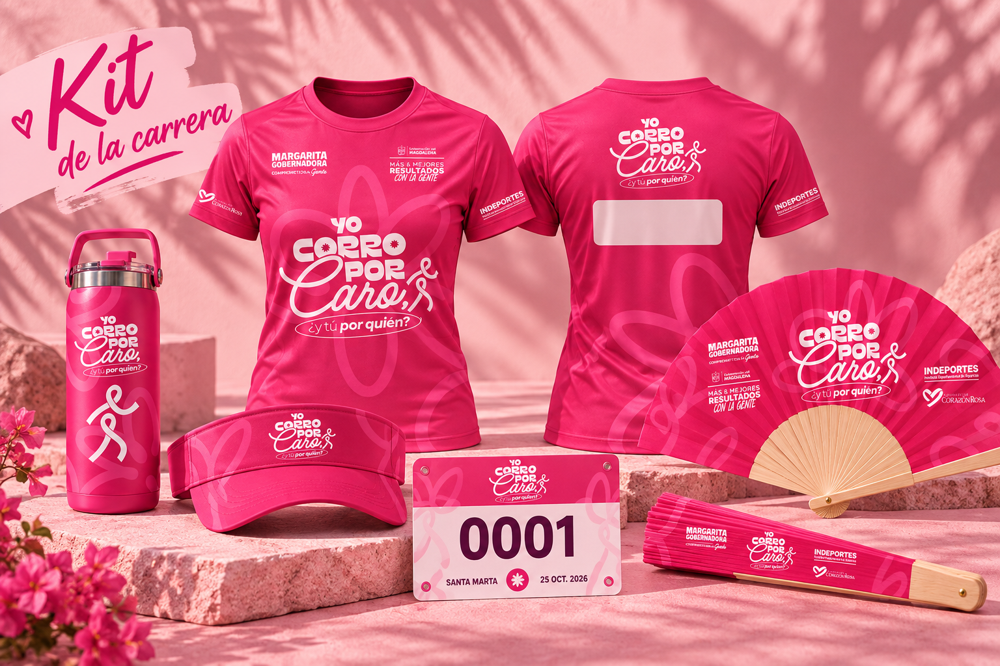
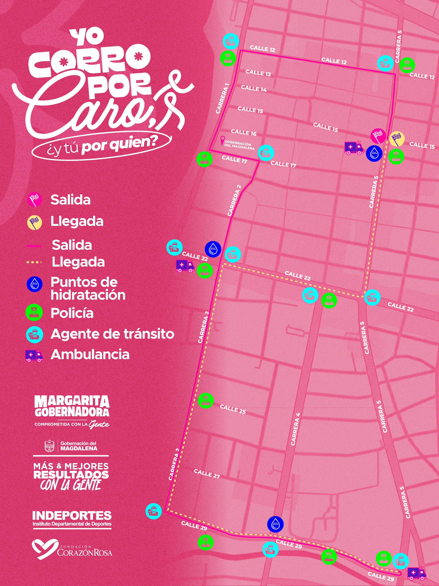
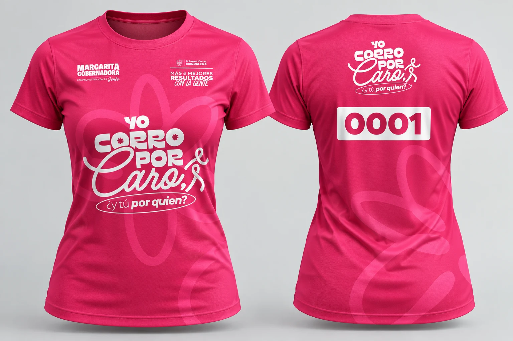
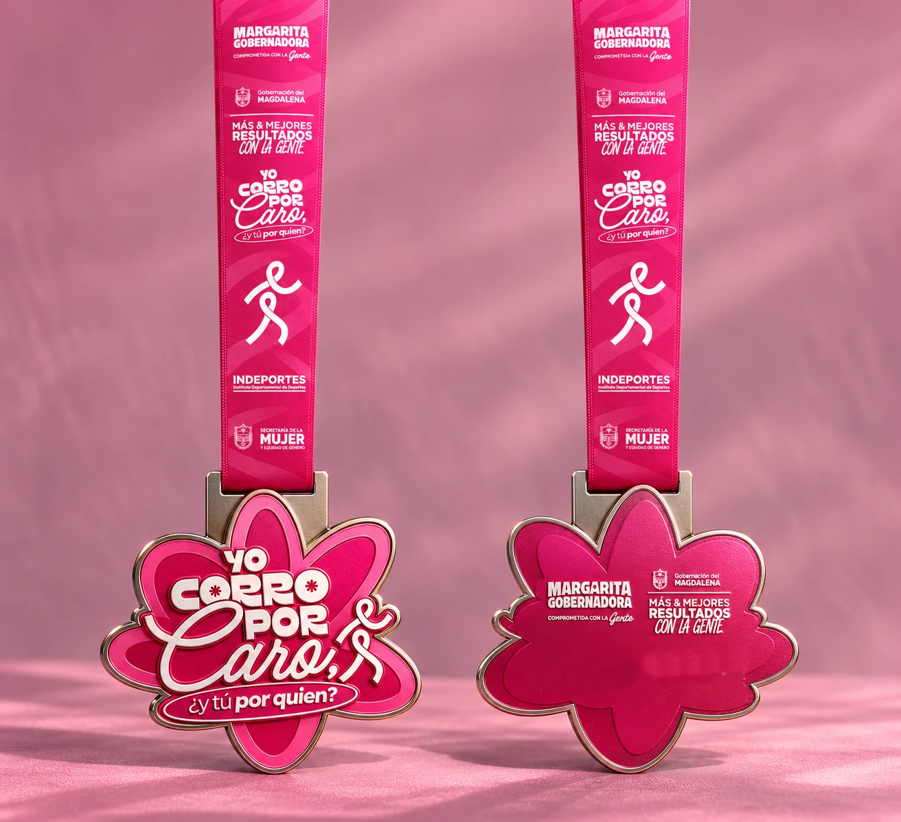

Distancias
Por anunciar

un movimiento
por todas. ♥
Cada paso tiene un propósito. ¿Cuál es el tuyo?
Por ti. Por ella. Por quienes nos inspiran a seguir. Yo Corro por Caro es una invitación a encontrarnos a través del deporte y a dar cada paso con un propósito.
Conoce el movimiento
Yo corro por ti,Una identidad que llevas contigo. Descubre los diseños preparados para Yo Corro por Caro.
Diseños del evento. El contenido final del kit se anunciará junto con las inscripciones.


SANTA MARTA, MAGDALENAEl 24 de octubre, nuestra ciudad será el punto de encuentro para correr por lo que nos inspira.
Los detalles de las distancias y categorías
se publicarán con las
inscripciones.
Por anunciar
Próximamente
Lo eliges tú
Inscripciones disponibles próximamente.
Cada persona tiene un motivo.
El nuestro es encontrarnos.


Una mirada a la identidad visual del evento.
Yo corro por ti,
por ellas, por todas. ♥